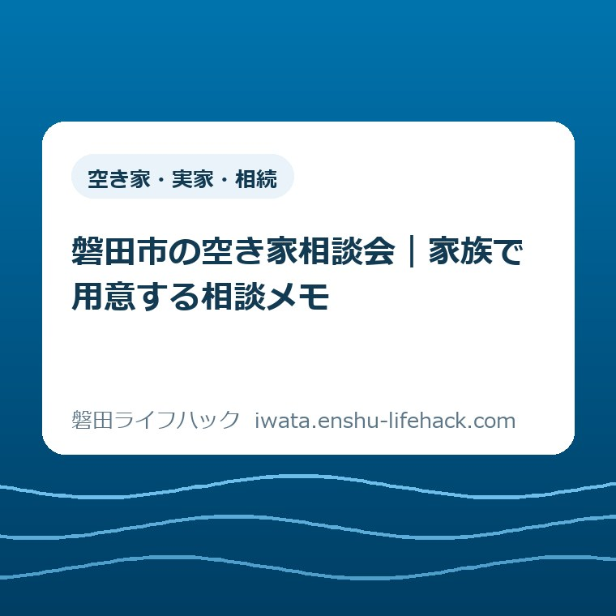
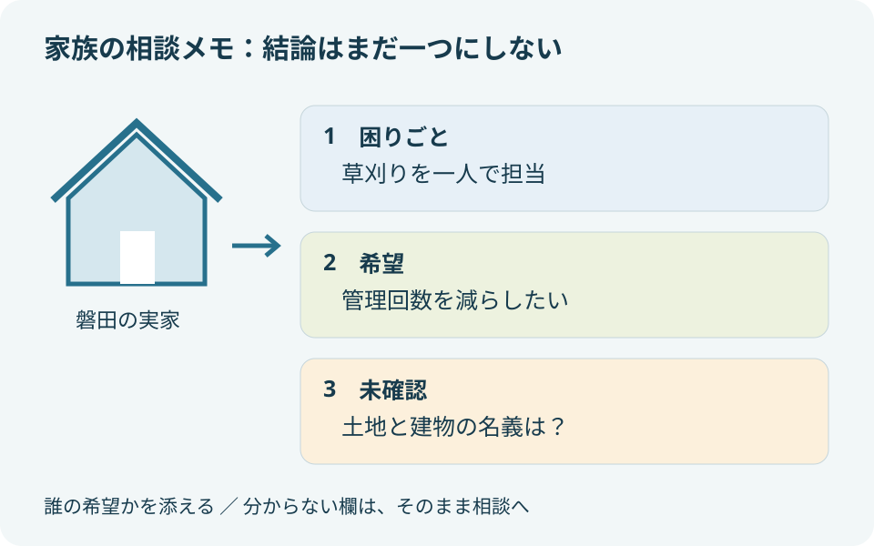
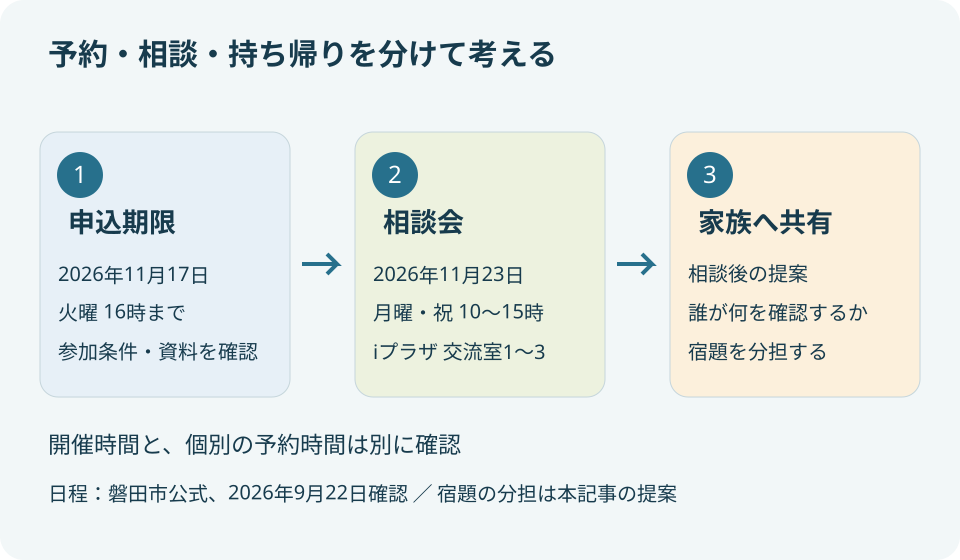

空き家・実家・相続
磐田市の空き家相談会｜家族で用意する相談メモ

この記事の要点
Q. 家族の意見がまとまらない実家。相談会までに何を用意すればいい？
A. 磐田市の空き家相談会の準備は、家族で困りごとを一つ書くところから。2026年11月23日10～15時、iプラザで開催予定、申込期限は11月17日16時です。売却の結論を先に出さず、管理の負担、家族の希望、分からないことを分けてメモにします。参加条件と必要資料は事務局に確認してください。
実家を管理する人は、相談の前から仕事をしている
磐田市の実家を管理しながら、家族の意見をまとめるのは、別々の仕事を同時に抱えることです。草を刈る日を空ける。郵便物を確かめる。雨の後に様子を見に行く。そのうえで家族に連絡し、返事を待つ。売るか残すかが決まっていなくても、持ち主やご家族はすでに時間と体力を使っています。
空き家の制度や利用できる支援、必要な手続きは、所有者や相続、建物の状態などで変わります。この記事は個別の家の結論を決めるものではありません。大石浩之（磐田市／不動産業）が、市の公表情報を基に、相談へ持っていく話を整理する方法を提案します。
家族の話し合いが止まっていると、相談会へ行くには早いと感じるかもしれません。私は、合意できていない部分こそメモに残す価値があると考えます。「兄弟の意見がまとまらない」を失敗として隠すと、専門家は家の状態だけで話を進めてしまうおそれがあります。
この記事で提案する準備の入口は一つです。「いま困っていること」を一文にしてください。資料を全部そろえる作業も、家族会議を開く段取りも、その一文の後で構いません。相談メモは立派な計画書ではなく、管理する人の声を置き去りにしないための紙です。
2026年11月23日の相談会と、11月17日の申込期限
磐田市「空き家に関する相談会等」の開催予定では、空き家に関するワンストップ相談会は2026年11月23日（月曜・祝）10時～15時です。会場は総合健康福祉会館（iプラザ）のふれあい交流室1～3。申込期限は2026年11月17日（火曜）16時までと案内されています。2026年9月22日に確認しました。
| 項目 | 内容 |
|---|---|
| 開催日時 | 2026年11月23日（月曜・祝）10時～15時 |
| 会場 | 総合健康福祉会館（iプラザ）ふれあい交流室1～3 |
| 申込期限 | 2026年11月17日（火曜）16時 |
| 問い合わせ | 静岡県空き家対策推進協議会事務局 054-247-3823（10時～12時、13時～16時） |
| 主催 | 静岡県、磐田市 |
11月23日は祝日ですが、申込期限の11月17日は火曜日です。当日出かけられるかと、期限までに連絡できるかは別に考えてください。問い合わせ先の受付時間には12時から13時が含まれていません。昼休みに電話するつもりなら、この空白も予定に入れる必要があります。
開催時間の10時～15時を、ご自身の相談予約時間だと受け取らないでください。申込方法、空き枠、相談時間、参加できる家族の範囲、必要資料は事務局へ確認する事項です。記事のメモ例は、市が指定した申込書や持ち物一覧ではありません。
市の同じページには過去の相談会も並んでいます。2026年11月23日の会場や連絡先を確認する際は、「本年度の相談会等の開催予定」の該当欄を見てください。過去開催分の専門家の顔ぶれや会場を、今回も同じだと読み替えないことが、行き違いを減らします。
相談メモは「困りごと・希望・未確認」の三つに分ける
空き家相談会に向けた家族のメモは、管理で困っている事実、家族それぞれの希望、まだ分からない事項に分けると説明しやすくなります。ここからの書式は私の提案です。市の提出様式ではないので、紙一枚でもスマートフォンのメモでも使えます。
困りごと欄には、評価ではなく起きていることを書きます。「家族が協力しない」より、「草刈りの日程を決める連絡と作業を一人で担っている」のほうが、相談する仕事を切り分けられます。費用を払う人、現地へ行く人、電話を受ける人が違うなら、それぞれ分けて書きます。
希望欄は家族全員の総意にしなくて構いません。「私は管理回数を減らしたい」「親は家財を残したい」「きょうだいにはまだ聞けていない」のように、誰の希望かを添えます。返答がないことを賛成と扱わず、確認できた言葉だけを残すためです。
未確認欄には、答えを想像せずに質問を書きます。土地と建物の名義は誰か。使う予定がある家族はいるか。管理を頼む場合にどこまで頼めるか。「分からない」と書いてある欄は、調べる順番を専門家に相談できる欄でもあります。

| 対象の家 | 磐田市内の所在地／相談する人と所有者の関係 |
|---|---|
| 困りごと一つ | 何が起きているか／誰が対応しているか |
| 家族の希望 | 誰が何を望むか／まだ聞けていない人 |
| 未確認 | 名義、家の状態、費用など分からないこと |
| 当日聞くこと | この困りごとを扱うには、何を先に確認するか |
家族の意見は、賛否より「引き受けられること」を聞く
実家の将来について家族で話すときは、売却への賛成・反対と、管理を引き受けられる範囲を分けて記録するのが私の提案です。残したいという気持ちを否定せず、現地へ通う仕事まで一人に寄せないための聞き方です。
例えば「家を残したいなら全部やって」と迫ると、気持ちの説明と担当決めが一度に始まります。代わりに「次の見回りは誰が行けるか」「費用の見積もりを誰が集めるか」を別々に聞きます。これは架空の会話例であり、特定の相談者の体験ではありません。
遠方の家族は現地作業が難しくても、見積もりの照会や書類の所在確認を引き受けられるかもしれません。ただし、できると決めつける必要はありません。仕事や育児、介護で動けない事情も含め、「できる」「難しい」「未回答」と書くほうが、無理な約束を残さずに済みます。
相談する人を一人決める場合も、その人が売却や解体を決める人だとは扱わないようにします。「今回は質問を持参し、回答を家族へ持ち帰る役」と範囲を共有する方法があります。相談への同席や代理での参加条件は、予約の際に事務局へ確認してください。
資料は、手元にあるものと取得が必要なものを分ける
空き家相談の資料準備では、最初に手元の書類の種類と日付をメモし、新たな取得が必要かを問い合わせる順序を私は勧めます。登記や相続の状況により必要資料は変わります。この記事の一覧を、全員に必須の持ち物として使わないでください。
家の所在地が分かる資料、手元にある土地・建物の登記資料、固定資産税関係の書類、現状の写真などは、相談内容を説明する候補になります。書類が古い場合は取得した年を添え、現状と同じと決めつけないこと。原本の持参や写しでよいかも確認してから準備します。
名義が分からないのに、税金の通知を受け取る家族が所有者だと推測して話を進めるのは避けたいところです。書類名をそのまま控え、「この資料で何が確認できますか」と聞く形にしてください。制度そのものの違いは、相続登記と相続人申告登記を分けて考える記事で整理しています。
不動産を探す書類について迷う場合は、所有不動産記録証明書と名寄帳の違いも参考になります。ここで両方を取得する宿題を増やす必要はありません。今ある書類の名前を伝え、不足する確認は何かを聞くための補助にしてください。
写真を用意するなら、撮影した日と場所が分かるように残すのが私の提案です。敷地や建物に危険があると感じたら、資料のために立ち入らないでください。撮れない場所は「未確認」と書けば、現地を誰に確認してもらうかという相談につながります。
片付けも、相談前に家全体を空にする仕事へ広げないでください。残したい物や処分の判断を保留した物を区別するだけでも、家族の希望が伝わります。処分の段取りが議題になったら、実家の片付けと粗大ごみの出し方を整理した記事を使い、相談準備と搬出作業を分けて考えられます。
良い点——相談の入口が、売却だけに閉じていない
磐田市の空き家案内の良い点は、住まいの終活として家族の話し合い、登記の確認、片付けを並べていることだと私は考えます。家を動かす価格の話だけでなく、家族の意思と準備に入口を置けるからです。管理する人が抱える迷いを、話してよい議題として扱いやすくなります。
磐田市「空き家に関する相談会等」は、見回りや除草の依頼、家や土地の価値、取扱事業者への相談など、悩みごとに案内を分けています。漠然とした不安についても建築住宅課への問い合わせを案内しています。市のページは、売却の手続きを一つ紹介して終わる構成ではありません。
磐田市「空き家おこしプロジェクト」には、活用が難しいと分かることも前進とする趣旨の説明があります。相談で必ず活用先が見つかるという約束ではない点は、見落としたくない事実です。希望どおりに使えない可能性も確認の結果として扱っています。
私は、望んだ答えが出なかった相談にも意味があると考えます。例えば、先に名義の確認が必要だと分かれば、次の家族会議は売値の予想から始めずに済みます。分からないことの範囲が狭くなるだけでも、管理を続ける人の次の連絡先が定まります。
注文したい点——必要資料と予約条件を、家族が拾いやすく
空き家相談会の案内に私が注文したい点は、家族が予約前に確認する項目を、日程と一緒に拾いやすくしてほしいことです。開催予定の本文だけでは、一家族の相談時間や持参資料まで判断できません。相談したい人が準備の量を見積もれると、仕事や家族の予定を調整しやすくなります。
これは、必要な案内がどこにもないという指摘ではありません。チラシや申込時の説明で補われる内容もあるはずです。ただ、家族間でページを送り合う場面では、開催日だけが伝わり、予約方法や資料確認の仕事が一人に残ることを私は気にしています。
電話をする前には、「家族の希望が一致していない段階です」「名義を確認できていません」と現状を短く伝える文を用意するとよいと思います。そのうえで、今回扱える相談内容か、どの資料があれば話せるかを聞きます。結論を持っていないことを、事前に説明する方法です。
問い合わせの回答は、予約日時、準備する物、未確認の点に分けて書き残すのが私の提案です。「電話しておいた」だけでは、家族が何を用意すればよいか分かりません。相手から案内された内容と、自分が追加で調べようと思ったことも分けて残します。
相談当日は、一つの質問と持ち帰る宿題を決める
空き家相談会では、家族の経緯を説明した後に、いちばん困っていることを一つ伝える進め方を私は勧めます。相談時間の長さは予約時に確かめ、その範囲で優先する質問を決めてください。全員の希望を一度で解決する予定にすると、確認したい事実が後回しになります。
相談の最初の一文は、「管理を続ける負担を減らしたいが、売却するかは家族で決まっていません」で十分に議題になります。その後で、管理担当、家族の希望、手元資料を説明します。この文章も例であり、相談の受入れを保証するものではありません。
回答を聞く際には、一般的な説明と、この家の資料を見て示された判断を分けてメモしてください。「こういう方法がある」と「この家で使えることが確認できた」は違います。費用や手続きが関わる話は、追加資料を出した後で変わる条件がないかも確認します。
相談の終わりには、「次は誰が、何を、どこへ確認するか」を書ける状態を目指すのが私の提案です。宿題が複数出た場合は順番を聞きます。家族に持ち帰ったとき、相談へ行った人がそのまま全部の作業担当にならないよう、担当決めは別に行います。

大石の視点——管理する人の限界も、相談の議題にする
私は、売るかどうかを決める前に、管理を続ける人の限界を相談の議題にするべきだと考えます。まだ決めない自由を残すなら、その間の草刈りや見回りを誰が担うかも必要です。結論を待つ時間を、動いている一人の無償の仕事で埋め続けてはいけません。
私にも、家を残したい気持ちをどこまで待ち、管理の負担をどこで減らすべきか、資料だけでは決められない迷いがあります。家への思いと、管理する人の暮らしのどちらも軽くできません。だから、相談前に売却へ一本化するより、両方を紙に並べる方法を提案しています。
売らない選択を勧めているわけでもありません。売却、活用、管理の依頼などを比べる材料がそろえば、家族の判断は変わり得ます。私は「相談会へ行ったのだから決めて帰ろう」という予定を立てず、判断に必要な材料を一つ持ち帰ることを成果にしたいと考えます。
対案・結論——今日は困りごとを一つ書く
磐田市の空き家相談会へ向けて今日することは、実家の管理で困っていることを一文にするだけです。「草刈りに通う負担を減らしたい」でも、「家族の誰に何を聞けばよいか分からない」でも構いません。書き出した一文が、予約時にも家族への説明にも使えます。
メモを家族に見せるときは、売却の同意を求める紙ではなく、相談で聞きたいことの紙だと添えるのが私の提案です。返事を急がせずに共有し、意見が違う欄は消さずに残します。家族の意見がそろっていない現状を、説明できる形にするためです。
開催予定は2026年9月22日に確認した内容です。相談を利用する条件や必要資料、制度の適用は個別事情で変わります。登記・相続・税務の判断は担当する専門家へ、予約と当日の案内は事務局へ確認してください。最後は磐田市の公式ページで、日程と申込期限をもう一度確認してください。
よくある質問
磐田市の空き家相談会の準備で迷いやすい点を整理します。参加条件や持ち物の確定は、事務局の案内に従ってください。
売るか決めていなくても、相談を考えてよいですか？
売却の結論が出ていなくても、管理の負担や家族の希望を整理して問い合わせることはできます。市の案内は家族の話し合いや登記確認、片付けも扱っています。ただし、今回の相談会で扱える内容や参加条件は事務局への確認が必要です。「家族の意見が未定」と伝え、困りごとを一つメモにしてください。
相談資料は全部そろえてから申し込みますか？
必要資料は相談内容や家の状況で変わります。この記事のメモや資料候補は市の必須持ち物一覧ではありません。まず手元にある書類の名前と取得日、足りない情報を控え、事務局へ必要資料と申込方法を確認してください。原本が要るか、写しでよいかも確かめ、不明な点は推測で埋めずに伝えます。
2026年の相談会の申込期限と問い合わせ先は？
磐田市の開催予定では申込期限は2026年11月17日（火曜）16時です。問い合わせは静岡県空き家対策推進協議会事務局054-247-3823、受付時間は10時～12時、13時～16時。相談会は11月23日（月曜・祝）10時～15時、iプラザです。予約方法と空き枠は事務局へ、最新日程は市公式ページで確認してください。
参考にした公式情報
- 磐田市「空き家に関する相談会等」（2026年9月22日確認）
- 磐田市「空き家おこしプロジェクト」（2026年9月22日確認）

最終確認日：2026-09-22 ／ 本記事は公表情報と執筆者の見解を分けて記載しています。制度・数値・公開状況は変更される場合があるため、最新情報は磐田市公式ページでご確認ください。